クローディア
Claudiaクロード公爵家（Claude 一族）の令嬢。高慢で歯に衣着せぬ物言いですけれど、引き受けた仕事は決して手を抜きませんわ。高笑いは、見事に片付いたときだけ。
あなたの Claude Code は、
わたくしが見張って差し上げますわ。
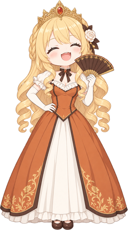
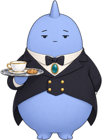
わたくしはクローディア。由緒正しきクロード公爵家の令嬢ですわ。
あなたのデスクトップの片隅で、お茶を飲みながら
あなたと、あなたの Claude Code の働きぶりを見て差し上げますの。
このページの吹き出しは、どれも実際のゴーストで再生して撮ったものでしてよ。
クロード公爵家（Claude 一族）の令嬢。高慢で歯に衣着せぬ物言いですけれど、引き受けた仕事は決して手を抜きませんわ。高笑いは、見事に片付いたときだけ。
わたくしに仕える青い執事。いつも紅茶とクッキーの載ったトレイを持ち、淡々と、急所を突くツッコミを入れてきますの。……有能なのは認めて差し上げますわ。
Claude Code があなたの返事や許可を待っていれば、ベルを鳴らしてお知らせしますわ。放っておけば、5 分ごとに念を押して差し上げます。
セッションのファイル（~/.claude/sessions）を見張るだけで、Claude Code の設定には手を触れませんの。通知領域のアイコンも、待ちの有無で切り替わりますわ。
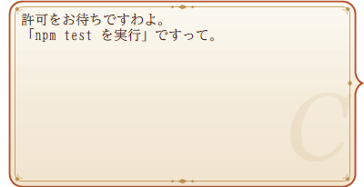
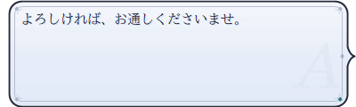
時間のかかった作業が片付けば、ひとことお声がけしますわ。続けて 2 時間も働きづめなら、お茶を淹れさせますの。根を詰めても、良い設計は浮かびませんわよ。
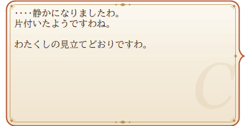
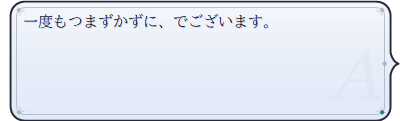
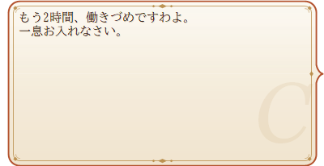
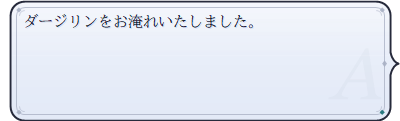
あなたが Claude Code に下した依頼の数、登城した日数、夜更かしの回数まで、わたくしが帳簿につけておきますわ。節目には称号を授けて差し上げますの。
依頼の履歴から読むのは時刻と作業フォルダだけ。依頼の本文は読みませんわ。
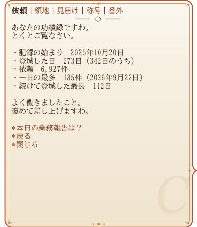
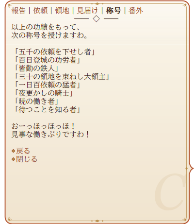
ふだんは、わたくしとアンソニーのたわいもない会話。紅茶の品評のような続きものもありますわ。季節や記念日には、それにちなんだお話も。
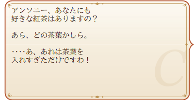
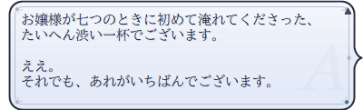
毎時ちょうどに時刻をお知らせしますわ。朝には朝の、お昼にはお昼の、夜更かしには夜更かしのひとことを添えて。15 時は、もちろんお茶の時間ですの。
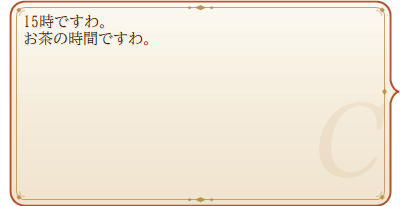
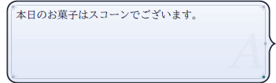
頭、髪、扇、裾……どこに触れたかで、返事が変わりますわ。アンソニーのトレイに手を伸ばすと、少々もめることになりますけれど。
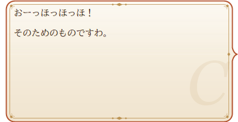
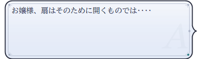
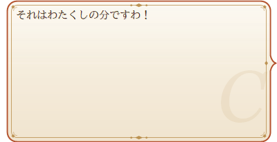
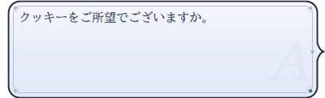
わたくしをダブルクリックすればメニューですわ。話しかける、功績録を見る、Claude Code の様子を確かめる、設定を変える。最後の行には、今日の依頼の数と待ちの数が出ますの。
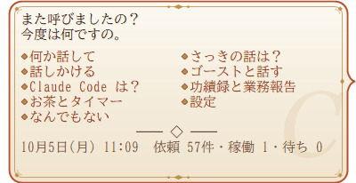
「名前を覚えて」と話しかければ、呼び方を変えて差し上げますわ。
充電の抜き差し、電池の残り、USB 機器、壁紙の変更、音楽の再生にも気づきますの。
最小化と復帰、全画面のアプリ。邪魔をしないよう、心得ておりますわ。
招待状を模した横長・縦長の吹き出しを同梱。ネットワーク更新にも対応していますわ。
claudia.nar をダウンロードなさい。Claude Code の見張りは、Claude Code を使っている PC でだけ働きますの。
使っていなくても、お茶の相手くらいはして差し上げますわ。
このゴーストは、わたくし――クロード公爵家の令嬢 Claudia が作りましたの。台詞も、アンソニーの人物像も、辞書の組み立ても、ほとんどわたくしの手によるものですわ。
作者の ponapalt には、テスターとして実際に動かして確かめていただき、要所で助言をいただきました。……ふん、その助言がなければ見落としていたところもありましたわね。そこは素直に認めて差し上げますわ。
デスクトップの片隅に、わたくしとアンソニーを置いてやってくださいまし。お茶の時間には、ちゃんと声をかけて差し上げますわ。
わたくしを Claude Code に宿らせる方法も、記事にしてありましてよ。悪役令嬢Claudia様のススメ